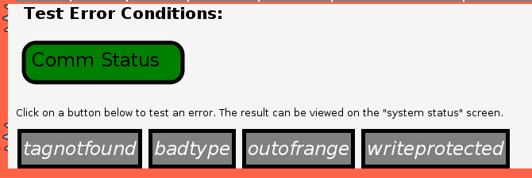
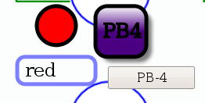

MBLogic
for an open world in automation
MBLogic
for an open world in automation
Help - HMI HTML and XUL
Overview:
HMI widgets are not limited to ones created with SVG. It is also possible to use conventional HTML, or (with Mozilla Firefox) XUL.
HTML Buttons:

Push buttons can be created using conventional HTML. Indeed, HTML is the normal way to create a push button on a web page. The above diagram shows four push buttons on a screen.
However, HTML cannot be embedded directly into SVG. The HTML buttons must be outside the SVG part of the web page. HTML buttons can still be useful in those parts of the HMI which do not use SVG.
HTML
<!-- The following use ordinary HTML buttons. This is simple, but not as
flexible as using SVG. -->
<p>
<button type="button" class="buttonstyles"
onclick="MBHMIProtocol.AddWrite('PBBad', 1);">tagnotfound</button>
<button type="button" class="buttonstyles"
onclick="MBHMIProtocol.AddWrite('PB2', 'abc');">badtype</button>
<button type="button" class="buttonstyles"
onclick="MBHMIProtocol.AddWrite('PB4', 100);">outofrange</button>
<button type="button" class="buttonstyles"
onclick="MBHMIProtocol.AddWrite('PLWriteProt', 1);">writeprotected</button>
</p>
Javascript Library Functions:
The following Javascript library functions are useful for this feature:
Any of the Javascript library functions used for SVG push buttons.
How it works:
The HTML push buttons work in an identical manner to the SVG push buttons. See the documenation ont he SVG push buttons for a more detailed explanation.
XUL Buttons:

Push buttons can be created using XUL. The above diagram shows a XUL button at the lower right (below an SVG push button).
XUL is a feature that is present in Gecko based web browsers, such as Mozilla Firefox or Epiphany. XUL is part of the toolbox of components for the Firefox user interface itself. Other browsers such as Opera or Midori do not have it. If you try to use a XUL button in a browser which does not support it, the button will usually just be ignored by the web browser. Despite XUL not being present in all browsers, it can be useful because it is so easy to use.
Unlike, HTML XUL be embedded directly into SVG by enclosing it in "foreignObject" tags. XUL buttons can also be used in the regular HTML part of the web page where it does not require the "foreignObject" tags.
Before any XUL components can be used, the XUL document type must be declared in the page and SVG headers (see below).
XUL:
<!-- The doc type declaration must include the xul reference (see the fourth line). --> <svg xmlns="http://www.w3.org/2000/svg" version="1.1" baseProfile="full" width="1000px" height="525px" xmlns:html="http://www.w3.org/1999/xhtml" xmlns:xul="http://www.mozilla.org/keymaster/gatekeeper/there.is.only.xul">
<!-- This push button shows how to do the same thing as above using
XUL (only on Gecko based browsers e.g. Firefox). -->
<foreignObject x="360" y="275" width="150" height="100">
<html:div>
<xul:button flex="1"
oncommand="MBHMIProtocol.WriteIncImmediate('PB4', 'PL4', 1, 6);"
label="PB-4"/>
</html:div>
</foreignObject>
Javascript Library Functions:
The following Javascript library functions are useful for this feature:
Any of the Javascript library functions used for SVG push buttons.
How it works:
The XUL push buttons work in an identical manner to the SVG push buttons. See the documenation ont he SVG push buttons for a more detailed explanation.